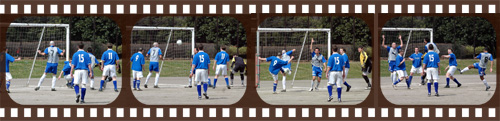
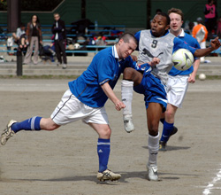

|
Oi Futo, Saturday 10th March,
MORSE CALLING ORKSON
Last week at Anfield Liverpool's crowd burst into a chorus of 'We all wish we had a team of Carraghers.' A team of Morsons (with perhaps a wee sprinkling of Yamagishis) would do BFC nicely.
Shosuke scored two more goals in another influential display, Ryo scored one on his return from Stranraer (or wherever in God's name he has been) and there was a bizarre own goal which prompted wild claims from one or two sun-stroked BFC players who were in the same area code.
BFC were again missing first-choice midfielders Taka and Terry, whose availability for crunch games against YCAC and Sala in the title run-in could be crucial. However, Pablo and Paul the Lodger put in huge stints alongside Paraguayan tank Carlos to set the tempo against a Geckoes side coming into the game on a decent run of form.
Morson went one better, the BFC's Jack Russell flying in from a business trip in Delhi, arriving just before kickoff with duty free Tiger Balm for the lads' pre-match basting and then putting in another excellent shift on a horrible, horrible pitch.
BFC went 1-0 up after some token early pressure, a weak clearance pounced on by Ryo, who produced a wonderful Xabi Alonso-esque lob from 35 metres which looped over the Geckoes goalkeeper. Welcome back, mucker!
BFC could, and really should, have added two or three, their final ball letting them down woefully with people wide open, calling through megaphones and waving placards imploring: 'On me 'ead, son!' To no avail.
BIT IN THE SHORTS
As happens, regularly, to the BFC, this came back to bite them in the shorts, a rare Geckoes corner whipped over and Kazu, unmarked, directing a powerful header goalwards. Brian sportingly told the referee the ball had crossed the line before his block and it was game on again. Grrrrrrr.
BFC built again and a combination of Pablo and Alastair were denied by an incredible clearance after a Carlos corner had caused panic. Jon missed one he would normally have buried. Carlos was unlucky. BFC's second, when it finally came, was pure comedy.
Simon's throw-in was flicked on by Alastair, clearing the last line of defence. Pink Neil gave chase and the ball took the mother of bobbles, deceiving the Geckoes goalkeeper, whose swish at the ball only helped it on its path into the net.
Now TECHNICALLY, went Alastair's argument, it was a 'long-range header which was deflected in.' Morson -- lawyer by trade, mauler by night -- even offered to construct a case. Which, admittedly, would have been as watertight as a haddock's swimsuit.
Anyway, all talk of taking it to the dubious goals panel died a death amid the rolling of eyes and general derision even before fees had been discussed.
On a serious note, this Oi Futo dirt pitch is a disgrace. Talk about walking on the moon! It is hardly TML's fault games are played here given the shortage of pitches but titles can be won or lost when teams are forced to play on such lunar landscapes.
Shosuke had been quiet, by his standards, in the first half and, after some encouragement from his team mates, came to life in the second. Suddenly it was all BFC, even if the end product was still missing.
MUZZY'S BIRD
With forwards continuously having to drop deep, it was again up to midfield tyros Shosuke, Neil and Evans to get amongst Geckoes. Shosuke it was, unsurprisingly, who scored BFC's third, springing the offside trap before sweeping the ball under the keeper.
Shosuke, having beaten Jon to the through ball for his first of the game, then put one on a silver platter for his skipper, who sliced it wide. HUGE bobble. Surely.
At the other end the BFC defenders were rarely under serious threat, with goalscorer Kazu the only one of the Geckoes frontline needing regular surveillance. Simon made one covering block worthy of mention in a solid first game at right-back. Although he wasn't that good.
Brian told me to say that (that Simon was rubbish). The versatile Engine played centre back against Geckoes, is one of the other nine current BFC right-backs, still has a time share on central midfield and has even started making noises about playing up front. Catalogue raisonne, as they say in Beritz!
MANGE TOUT
Shosuke delivered the coup de grace with a fourth goal at some point, in similar circumstances to his first, I think. At that point the sunscreen had been cracked open and transmitter radios tuned in to events at YCAC.
As the post-match beers slipped down with the evening sun, a table full of BFC players bit their lips at the news of a nil-nil in Yokohama. France's amazing win over champions Hibs proved, once again, there are no easy games in the TML anymore.
It had been a good day for BFC. But make no mistake, there will be bad days before the title race is decided and Lady Luck will play a huge part too.
Can you hear clucking?.
Report by Nibbled Converse.
|